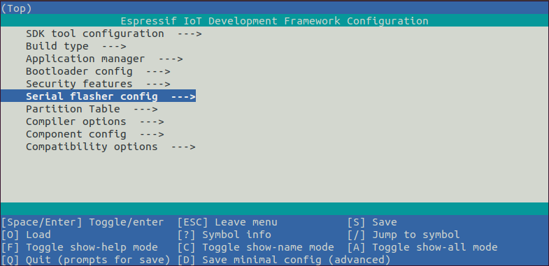

Now since all requirements are met, the next topic guides you on how to start your first project.
This guide helps you on the first steps using ESP-IDF. Follow this guide to start a new project on the ESP32 and build, flash, and monitor the device output.
Note
If you have not yet installed ESP-IDF, please go to Installation and follow the instruction in order to get all the software needed to use this guide.
Start a Project
Now you are ready to prepare your application for ESP32. You can start with get-started/hello_world project from examples directory in ESP-IDF.
Important
The ESP-IDF build system does not support spaces in the paths to either ESP-IDF or to projects.
Copy the project get-started/hello_world to ~/esp directory:
cd %userprofile%\esp
xcopy /e /i %IDF_PATH%\examples\get-started\hello_world hello_world
Note
There is a range of example projects in the examples directory in ESP-IDF. You can copy any project in the same way as presented above and run it. It is also possible to build examples in-place without copying them first.
Connect Your Device
Now connect your ESP32 board to the computer and check under which serial port the board is visible.
Serial port names start with COM in Windows.
If you are not sure how to check the serial port name, please refer to Establish Serial Connection with ESP32 for full details.
Note
Keep the port name handy as it is needed in the next steps.
Configure Your Project
Navigate to your hello_world directory, set ESP32 as the target, and run the project configuration utility menuconfig.
Windows
cd %userprofile%\esp\hello_world
idf.py set-target esp32
idf.py menuconfig
After opening a new project, you should first set the target with idf.py set-target esp32. Note that existing builds and configurations in the project, if any, are cleared and initialized in this process. The target may be saved in the environment variable to skip this step at all. See Select the Target Chip: set-target for additional information.
If the previous steps have been done correctly, the following menu appears:

Project configuration - Home window
You are using this menu to set up project specific variables, e.g., Wi-Fi network name and password, the processor speed, etc. Setting up the project with menuconfig may be skipped for "hello_word", since this example runs with default configuration.
Attention
If you use ESP32-DevKitC board with the ESP32-SOLO-1 module, or ESP32-DevKitM-1 board with the ESP32-MIN1-1/1U module, please enable single core mode (CONFIG_FREERTOS_UNICORE) in menuconfig before flashing examples.
Note
The colors of the menu could be different in your terminal. You can change the appearance with the option --style. Please run idf.py menuconfig --help for further information.
If you are using one of the supported development boards, you can speed up your development by using Board Support Package. See Additional Tips for more information.